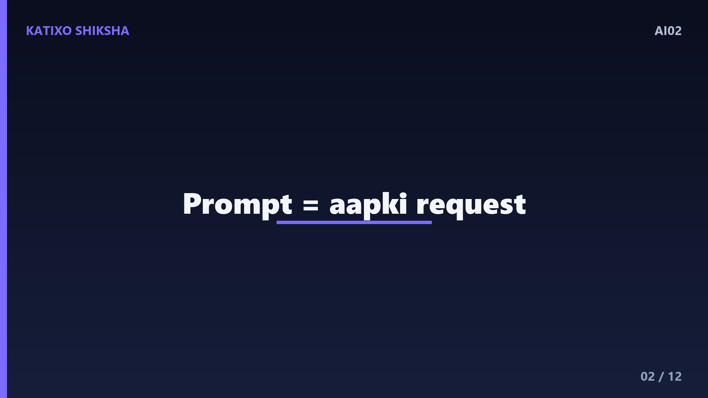
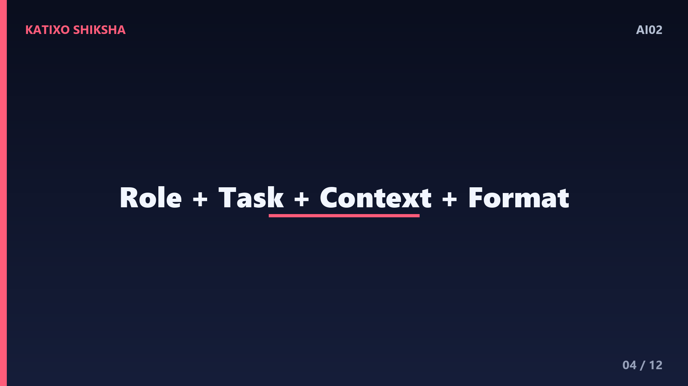
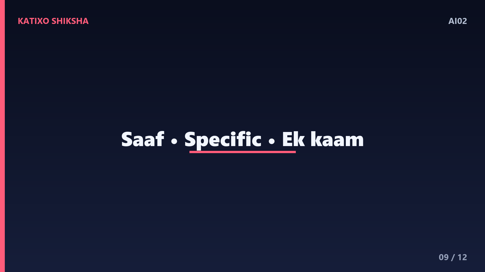
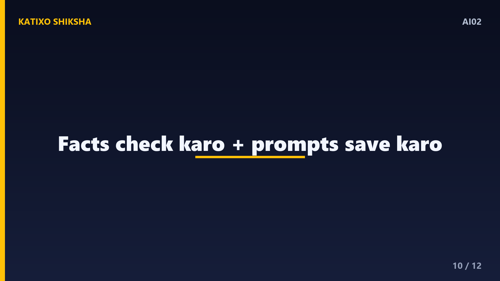
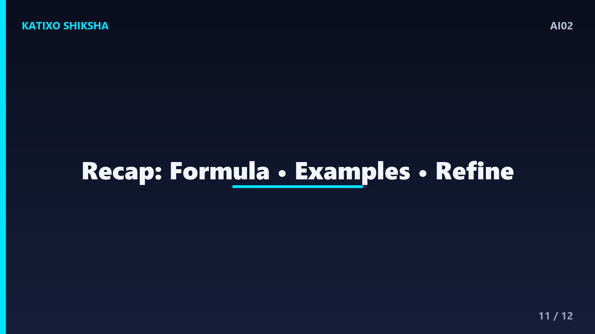
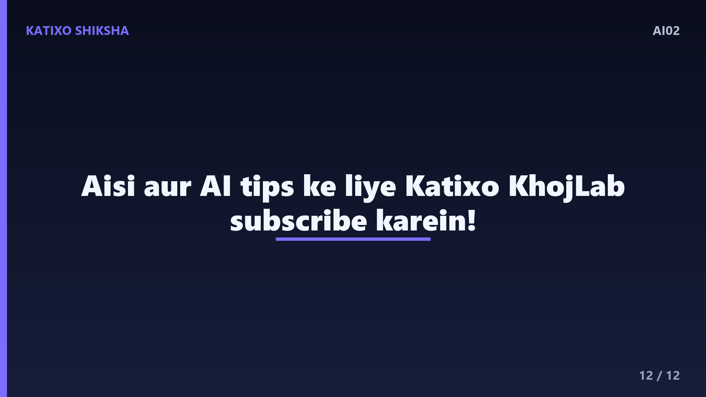

AI02 — Achhe AI Prompts Kaise Likhein?
Slide 1दोस्तों, क्या आपके साथ भी कभी ऐसा हुआ है कि आपने ChatGPT या किसी और AI से कुछ पूछा, और जवाब बिल्कुल बेकार या आधा-अधूरा मिला? असल में अक्सर गलती AI की नहीं, बल्कि हमारे सवाल यानी prompt की होती है। आज Katixo KhojLab की इस episode में हम सीखेंगे कि achhe AI prompts कैसे लिखें, ताकि हर बार आपको exactly वही जवाब मिले जो आप चाहते हो। बिल्कुल आसान Hinglish में, step by step, real examples के साथ। चलिए शुरू करते हैं।

Slide 2सबसे पहले समझते हैं — prompt होता क्या है? Prompt वो instruction या सवाल है जो आप AI को देते हो, यानी आपकी request. जैसे आप किसी इंसान से जितना साफ़ बोलोगे, उतना ही सही काम होगा, वैसे ही AI के साथ है। अगर आप अधूरी या confusing बात लिखोगे, तो AI को अंदाज़ा लगाना पड़ेगा और जवाब इधर-उधर हो जाएगा। इसीलिए prompt लिखना एक छोटी सी skill है, जिसे थोड़ा अभ्यास करके कोई भी सीख सकता है। यही skill आपको बाकी सबसे आगे रखेगी।
Slide 3अब देखते हैं एक खराब prompt और एक अच्छे prompt का फर्क। मान लो आपने लिखा — essay लिखो। AI सोचेगा, किस topic पर, कितना लंबा, किसके लिए? जवाब आम सा आएगा। अब इसकी जगह लिखो — पर्यावरण बचाने पर, class आठ के बच्चे के लिए, दो सौ शब्दों का सरल हिंदी essay लिखो। देखा फर्क? दूसरे prompt में topic भी है, लंबाई भी, और किसके लिए है ये भी। बस यही छोटी-छोटी detail जवाब को कमाल का बना देती है।

Slide 4तो एक अच्छे prompt में चार चीज़ें होनी चाहिए, मैं इन्हें आसान फॉर्मूले से बताता हूँ। पहला — Role, यानी AI को बताओ वो कौन बने, जैसे एक teacher या एक डॉक्टर. दूसरा — Task, यानी असल काम क्या करना है, लिखना, समझाना या list बनाना. तीसरा — Context, यानी ज़रूरी background, किसके लिए है, कौन सी class या situation. और चौथा — Format, यानी जवाब कैसा हो, points में, paragraph में, या एक table में। इन चारों को मिला दो, और आपका prompt तैयार है।
Slide 5चलिए इस फॉर्मूले से एक पूरा prompt बनाते हैं, एक concrete example के साथ। मान लो आपको एक job के लिए email लिखनी है। आप लिख सकते हो — तुम एक experienced HR professional हो। मेरे लिए एक job application email लिखो। ये एक data entry की job के लिए है, मेरे पास एक साल का experience है। Email formal हो, छोटी हो, और तीन paragraph में हो। देखो, इसमें Role, Task, Context और Format चारों आ गए। ऐसे prompt से जवाब हमेशा सटीक और काम का मिलता है।
Slide 6एक और बहुत powerful तरीका है — AI को example देना। इसे technical भाषा में few-shot prompting कहते हैं। मान लो आप चाहते हो कि AI एक खास style में लिखे। तो आप पहले एक sample दे दो और कहो — इसी style और tone में आगे लिखो। जैसे, अगर आपको product के लिए छोटे आकर्षक captions चाहिए, तो एक caption खुद लिखकर दिखा दो, फिर AI बाकी उसी अंदाज़ में बना देगा। Example देने से AI को आपकी पसंद समझ आ जाती है और गलती की गुंजाइश बहुत कम हो जाती है।
Slide 7अब एक trick जो मुश्किल सवालों में बहुत काम आती है। अगर कोई problem थोड़ी complex है, जैसे कोई math सवाल या कोई planning, तो AI से कहो — step by step सोचकर बताओ। ऐसा कहने से AI जल्दबाज़ी में सीधे जवाब देने की बजाय, एक-एक कदम करके सोचता है, और इससे जवाब ज़्यादा सही आता है। इसे chain of thought कहते हैं। तो जब भी कोई reasoning या calculation वाला काम हो, ये जादुई line ज़रूर जोड़ो — पहले सोचो, फिर step by step जवाब दो।
Slide 8एक और कमाल की आदत — जवाब को सुधारवाना, यानी iterate करना। पहला जवाब perfect ना भी आए तो घबराओ मत। आप उसी chat में आगे लिख सकते हो — इसे और छोटा करो, या इसमें एक example जोड़ो, या tone को थोड़ा friendly बनाओ। AI पिछली बात याद रखता है, इसलिए वो उसी जवाब पर काम करके सुधार देगा। तो prompt लिखना एक बातचीत की तरह सोचो, एक ही बार में सब कुछ पाने की कोशिश मत करो। धीरे-धीरे जवाब को अपने मनचाहे रूप में ढाल लो।

Slide 9अब कुछ ज़रूरी tips जो आपके prompts को और बेहतर बनाएँगी। पहली tip — हमेशा साफ़ और सीधी भाषा use करो, घुमावदार लंबे वाक्य AI को confuse करते हैं। दूसरी tip — अगर आपको जवाब की लंबाई या भाषा खास चाहिए, तो साफ़ बता दो, जैसे सौ शब्दों में, या आसान हिंदी में। तीसरी tip — एक prompt में बहुत सारे काम एक साथ मत ठूँसो, एक समय पर एक मुख्य काम दो, इससे जवाब साफ़ और सटीक रहता है।

Slide 10एक छोटी सी सावधानी भी याद रखो। AI से बेहतरीन prompt पर भी कभी-कभी गलत जानकारी आ सकती है, इसलिए कोई भी ज़रूरी fact, खासकर number, date या medical बात, किसी भरोसेमंद source से दोबारा check ज़रूर करो। और एक pro habit — अपने अच्छे prompts को कहीं save कर लो, जैसे notes में। जो prompt एक बार बढ़िया काम कर जाए, उसे आप बार-बार थोड़े बदलाव के साथ इस्तेमाल कर सकते हो। ये आपका अपना छोटा सा prompt collection बन जाएगा।

Slide 11तो चलिए अब तक की पूरी बात का एक quick recap कर लेते हैं, तीन आसान points में। पहला — अच्छा prompt हमेशा साफ़ और detailed होता है, और उसमें Role, Task, Context और Format ये चार चीज़ें ज़रूर डालो। दूसरा — मुश्किल कामों में AI को example दो और step by step सोचने को कहो, इससे जवाब सटीक आता है। तीसरा — पहले जवाब से रुको मत, बातचीत आगे बढ़ाकर उसे सुधारवाते रहो, और अच्छे prompts को आगे के लिए save कर लो।

Slide 12तो दोस्तों, आज आपने सीखा कि achha prompt लिखना कोई rocket science नहीं, बस थोड़ी सी साफ़ सोच और अभ्यास की बात है। जितना clear आप पूछोगे, उतना ही कमाल का जवाब AI देगा। तो आज ही एक काम चुनो, इस फॉर्मूले से prompt बनाओ, और फर्क खुद देखो। ऐसी और AI tips ke liye Katixo KhojLab subscribe करें, और इस video को अपने दोस्तों के साथ ज़रूर share करें। मिलते हैं अगली episode में, जहाँ हम AI को अपने laptop पर locally चलाना सीखेंगे!